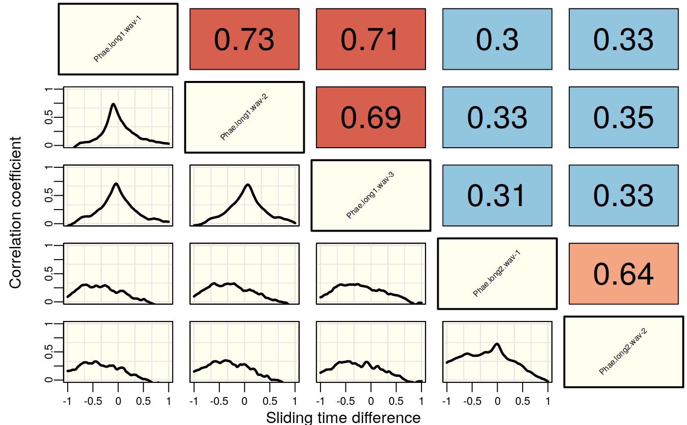

xcorr.graph.Rdxcorr.graph generates pairwise plots showing the spectrogram cross-correlation scores
against the time sliding.
xcorr.graph(X, cex.cor = 1, cex.lab = 1, cex.axis.lab = 1, rel.cex = FALSE, labs = NULL)
| X | Output from |
|---|---|
| cex.cor | A numeric vector of length 1 giving the amount by which correlation scores (in the upper triangle of the multipannel plot) should be magnified. Default is 1. |
| cex.lab | A numeric vector of length 1 giving the amount by which signal selection labels (in diagonal of the multipannel plot) should be magnified. Default is 1. |
| cex.axis.lab | A numeric vector of length 1 giving the amount by which the axis labels should be magnified. Default is 1. |
| rel.cex | Logical. Controls whether the size of the correlation scores (in the upper triangle of the multipannel plot) should be relative to the correlation score. |
| labs | Alternative selection labels. If not provided the combined name of sound files and selection numbers are used as labels.
Default is |
This function generates pairwise plots of the spectrogram cross-correlation scores
by sliding step. The function takes the output of xcorr (when cor.mat is FALSE in xcorr) as input. The colors of
the lines in the lower triangle of the plot matrix represent the strenght of the similarity between
the two signals. The x axis shows the time difference between the two signals for each sliding step
(0 means perfectly centered signals). Note that large number of signals may not display well in the
default graphic device. In such cases saving the plot as and image file is adviced.
Araya-Salas, M., & Smith-Vidaurre, G. (2017). warbleR: An R package to streamline analysis of animal acoustic signals. Methods in Ecology and Evolution, 8(2), 184-191.H. Khanna, S.L.L. Gaunt & D.A. McCallum (1997). Digital spectrographic cross-correlation: tests of sensitivity. Bioacoustics 7(3): 209-234
{ #load data data(list = c("Phae.long1", "Phae.long2", "lbh_selec_table")) writeWave(Phae.long1, file.path(tempdir(), "Phae.long1.wav")) #save sound files writeWave(Phae.long2, file.path(tempdir(), "Phae.long2.wav")) #run cross correlation first xcor<-xcorr(X = lbh_selec_table[1:5,], wl =300, bp= c(2, 9), ovlp=90, dens=0.8, wn= "hanning", cor.method = "pearson", cor.mat = FALSE, path = tempdir()) #plot pairwise scores xcorr.graph(X = xcor, cex.cor = 2, cex.lab = 1, rel.cex = FALSE) }#> Warning: graphical parameter "cin" cannot be set#> Warning: graphical parameter "cra" cannot be set#> Warning: graphical parameter "csi" cannot be set#> Warning: graphical parameter "cxy" cannot be set#> Warning: graphical parameter "din" cannot be set#> Warning: graphical parameter "page" cannot be set